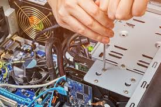
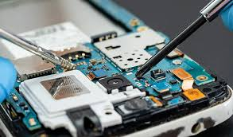

Reparacion de computadoras
la reparación de computadoras implica:
Diagnóstico:
Identificar el origen del problema, ya sea hardware (componentes físicos como la tarjeta madre, memoria RAM, disco duro, etc.) o software (sistemas operativos, programas, controladores, etc.).
Solución:
Dependiendo del problema, la solución puede ser:
Reparación: Arreglar o ajustar un componente defectuoso.
Reemplazo: Sustituir un componente dañado o defectuoso por uno nuevo.
Instalación/Actualización: Instalar o actualizar software, controladores o sistemas operativos.
Solución de problemas de software: Resolver errores o fallas en el software de la computadora.
Mantenimiento:
Asegurar el buen funcionamiento a largo plazo, lo que puede incluir limpieza, optimización del sistema y actualizaciones periódicas.
Ejemplos de problemas que se pueden solucionar con la reparación de computadoras:
Computadora no enciende o se apaga repentinamente.
El sistema operativo no arranca o presenta errores.
La computadora se vuelve lenta o tarda en responder.
Fallas en el hardware (disco duro, memoria RAM, etc.).
Problemas de red o conectividad.
La reparación de computadoras es importante porque:
Ayuda a mantener la productividad y el uso normal de la computadora.
Previene la pérdida de datos y el daño a los componentes.
Asegura el buen funcionamiento de la computadora a largo plazo.
;
Reparacion de celulares
Descripción detallada:
Diagnóstico:
Se realizan pruebas para identificar la causa del problema, ya sea una falla en el hardware (como la pantalla, batería, puertos de carga, etc.) o en el software (como errores del sistema operativo, aplicaciones o malware).
Reparación de Hardware:
Incluye el reemplazo de componentes defectuosos, como pantallas LCD, baterías, puertos de carga, botones, micrófonos y altavoces.
Reparación de Software:
Implica la actualización del sistema operativo, la eliminación de malware, la resolución de errores de aplicaciones y la restauración del sistema a un estado operativo.
Mantenimiento Preventivo:
Incluye la limpieza de los componentes, la actualización del software, la optimización del rendimiento y la prevención de futuras fallas.
Aseguramiento de Calidad:
Después de la reparación, se realizan pruebas para garantizar que el dispositivo funciona correctamente y que el problema ha sido solucionado de manera efectiva.
Presupuestos y Asesoramiento:
Los técnicos pueden asesorar a los clientes sobre la viabilidad de la reparación, el costo de los repuestos y las opciones disponibles para la solución del problema.
;